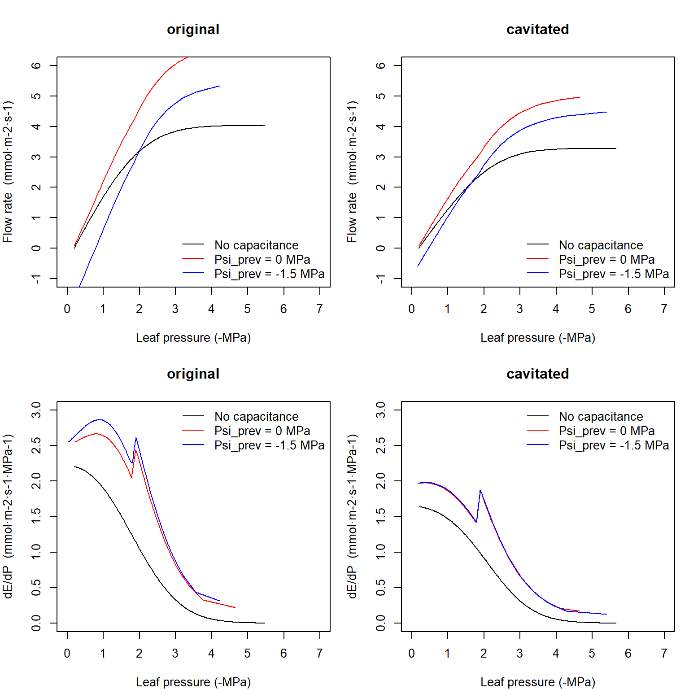
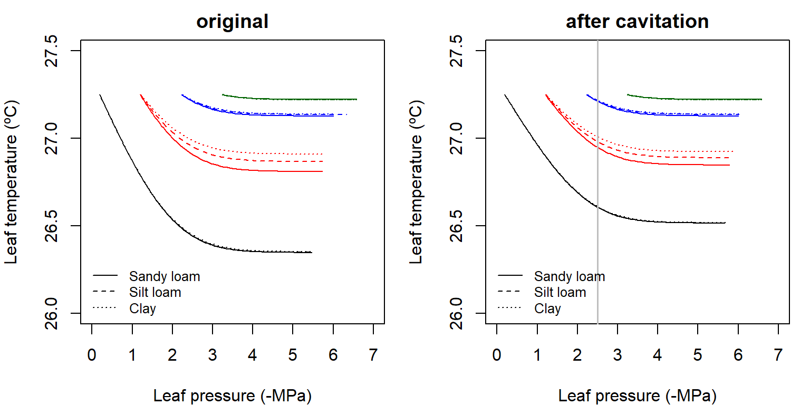
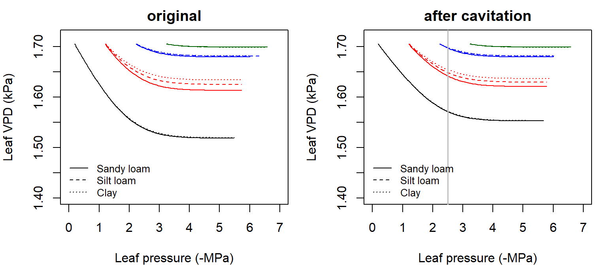
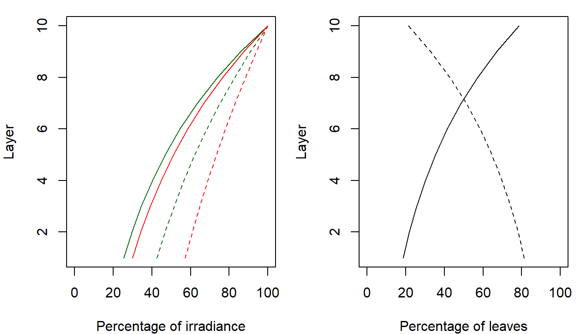
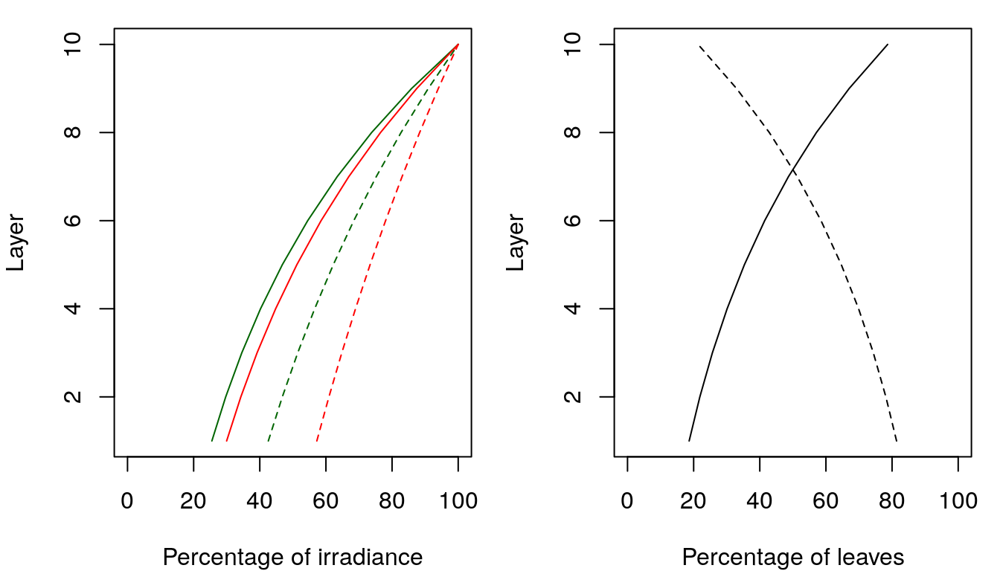
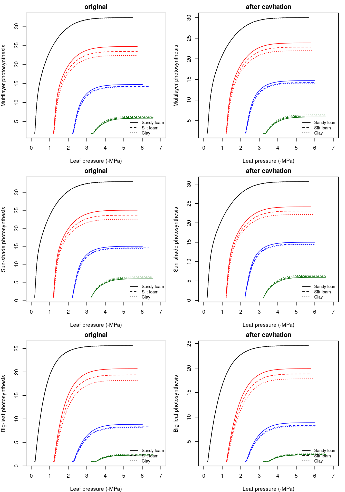
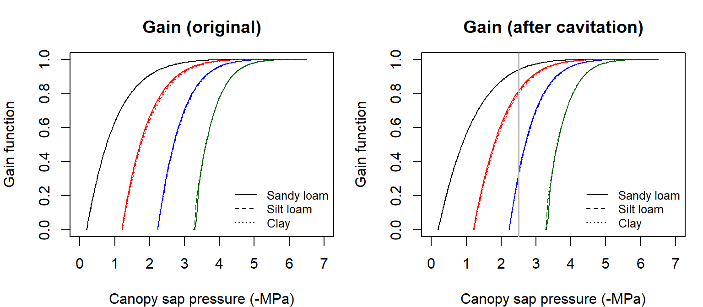
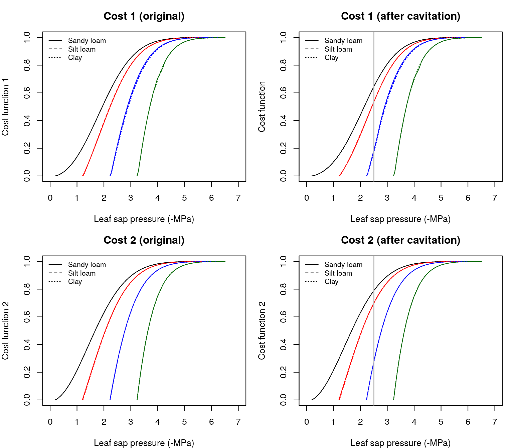

Chapter 12 Plant photosynthesis and stomatal regulation
12.1 Leaf energy balance, gas exchange and photosynthesis
12.1.1 Leaf VPD, conductance to water vapor and photosynthesis
The water supply function specifies the flow rate, as per leaf area, for values of leaf water potential. If we know air temperature, air vapour pressure and the light conditions in which leaves are, we can be translate the supply function into a photosynthesis function (J. S. Sperry, Venturas, et al. 2016). In a nutshell, \(E\) from the supply function is used to calculate leaf temperature from an evaluation of the leaf energy balance. The diffusive conductances of the leaf to water and \(CO_{2}\) are obtained from water supply and water vapor deficit. The gross assimilation rate is then obtained from the diffusive conductance and a modelled curve between assimilation and leaf internal \(CO_{2}\) concentration. Gross assimilation is calculated, without subtracting autotrophic respiration, because the purpose is to represent the instantaneous gain of opening the stomata. Nevertheless autotrophic respiration is included when calculating leaf net photosynthesis.
Tmin = 15
Tmax = 30
RHmin = 60
RHmax = 75
Tcan = meteoland::utils_averageDaylightTemperature(Tmin, Tmax)
vpa = meteoland::utils_averageDailyVP(Tmin, Tmax, RHmin, RHmax)
Patm = meteoland::utils_atmosphericPressure(100)
Q = 2000
Catm = 386
Vmax298 = 100
Jmax298 = 1.67*Vmax298
Gmin = 0.00001;
Gmax = 0.3
Rabs = 740 #W * m-212.1.2 Leaf temperature and vapor pressure deficit
Leaf temperature (\(T_{leaf}\); in Celsius) can be calculated for any given flow rate \(E(\Psi_{leaf})\) using (Campbell and Norman 1998):
\[\begin{equation}
T_{leaf}(\Psi_{leaf}) = T_{can}+\frac{I_{abs}-\epsilon\cdot\sigma\cdot(T_{can}+273.15)^4-\lambda_v\cdot E(\Psi_{leaf})}{C_p\cdot(g_r+g_{Ha})}
\end{equation}\]
where \(I_{abs}\) (in \(W \cdot m^{-2}\)) is the instantaneous shortwave and longwave radiation absorbed per leaf area unit, \(E(\Psi_{leaf})\) is the flow (converted to \(mol \cdot s^{-1} \cdot m^{-2}\) per two-sided leaf area basis), \(\epsilon\) is longwave radiation emissivity (0.97), \(\sigma\) is the Stephan-Boltzman constant, \(T_{can}\) is the canopy air temperature (in ºC; see Radiation and energy balance), \(C_p\) = 29.3 \(J \cdot mol^{-1} \cdot ºC^{-1}\) is the specific heat capacity of dry air at constant pressure and \(\lambda_v\) is the latent heat of vaporization (in \(J \cdot mol^{-1}\)):
\[\begin{equation}
\lambda_v = (2.5023\cdot 10^6-(2430.54\cdot T_{can}))\cdot 0.018
\end{equation}\]
Finally, \(g_r\) and \(g_{Ha}\) are the radiative and heat conductance values (in \(mol \cdot m^{-2} \cdot s^{-1}\)), respectively (Campbell and Norman 1998):
\[\begin{eqnarray}
g_r &=& \frac{4\cdot \epsilon \cdot \sigma \cdot (T_{can}+273.15)^3}{C_p} \\
g_{Ha} &=& 0.189 \cdot (u/d)^{0.5}
\end{eqnarray}\]
where \(u\) is wind speed (in \(m \cdot s^{-1}\)), taken as the wind speed at mid-crown height, and \(d\) is 0.72 times the leaf width (species parameter LeafWidth in \(cm\)).
The following figures illustrate the value of \(T_{leaf}\) for two leaf sizes and varying values of wind speed and flow rate, calculated for 24ºC canopy temperature and 740 \(W \cdot m^{-2}\) instantaneous absorved radiation (see function biophysics_leafTemperature):

Let’s now fix wind speed to 2 m/s. The application of the above equations to the \(E(\Psi_{leaf})\) curves corresponding to the complete hydraulic network yields the following \(T_{leaf}(\Psi_{leaf})\) curves:

Thus, transpiration decreases leaf temperature (whereas radiation increases it and wind speed makes it more similar to air temperature). Vapor pressure deficit in the leaf (\(VPD_{leaf}\), in kPa) is calculated as: \[\begin{equation} VPD_{leaf} = VP(T_{leaf})-vp_{day} \end{equation}\] Where \(vp_{day}\) is the average daily vapor pressure and \(VP(T)\) is a function giving the saturated vapor pressure for temperature \(T\). Let us assume the following values of relative humidity, yielding an average \(vp_{day}\):
RHmin = 60
RHmax = 75
vpa = utils_averageDailyVP(Tmin, Tmax, RHmin, RHmax)
vpa## [1] 1.912181the application of the above equation to the \(T_{leaf}(\Psi_{leaf})\) curves yields the following \(VPD_{leaf}(\Psi_{leaf})\) curves:

Since leaf saturated VP decreases when leaf temperature decreases, transpiration decreases leaf VPD as a result of decreasing leaf temperature.
12.1.3 Leaf conductance to water vapor
Leaf conductance to water vapor (\(g_{sw}\); in \(mol H_2O \cdot s^{-1} \cdot m^{-2}\)) and to carbon dioxide (\(g_{sc}\); in mol \(CO_{2} \cdot s^{-1} \cdot m^{-2}\)) are obtained for each value of \(E\) (in \(mol \cdot s^{-1} \cdot m^{-2}\)) and \(VPD_{leaf}\) using: \[\begin{eqnarray} g_{sw} &=& E \cdot \frac{P_{atm}}{VPD_{leaf}}\\ g_{sc} &=& g_{sw}/1.6 \end{eqnarray}\] the application of the equation for \(g_{sw}\) to the \(VPD_{leaf}(\Psi_{leaf})\) curves yields the following \(g_{sw}(\Psi_{leaf})\) curves:

Hence, larger values of transpiration require larger values of leaf water vapour conductance. In the previous figure we have indicated the thresholds of \(g_{swmin}\) and \(g_{swmax}\), the species-specific minimum and maximum water vapour conductances (i.e. conductances when stomata are fully closed and fully open, respectively; see parameters Gwmin and Gwmax in SpParamsMED).
Gmin = 0.0045;
Gmax = 0.3\(g_{sw}\) cannot exceed \(g_{swmax}\) so that some flow rates may not be possible (see stomatal regulation below). However, \(g_{swmax}\) should quickly become non-limiting as soil dries (i.e. reducing \(E\)) or \(VPD_{leaf}\) increases (J. S. Sperry, Venturas, et al. 2016). Minimum stomatal conductance is also used in medfate when building the supply function, as it specifies the minimum flow rates that will occur for completely-closed stomata, i.e. the minimum flow from which supply function is build.
12.1.4 Leaf photosynthesis
Rubisco-limited photosynthesis rate \(A_c\) (in \(\mu mol CO_2 \cdot s^{-1} \cdot m^{-2}\)) is modelled using (Collatz et al. 1991; Medlyn, Loustau, and Delzon 2002):
\[\begin{equation}
A_c=\frac{V_{max}\cdot (C_i- \Gamma*)}{C_i+K_c \cdot (1+ O_a/K_o)}
\end{equation}\]
where \(V_{max}\) is Rubisco’s maximum carboxylation rate (in \(\mu mol CO_2 \cdot s^{-1} \cdot m^{-2}\)), \(C_i\) is the internal carbon dioxide concentration (in \(\mu mol \cdot mol^{-1}\)), \(\Gamma*\) is the compensation point (in \(\mu mol \cdot mol^{-1}\)), \(K_c\) (in \(\mu mol \cdot mol^{-1}\)) and \(K_o\) (in \(mmol \cdot mol^{-1}\)) are Michaelis-Menten constants for carboxylation and oxygenation, respectively, and \(O_a\) is the atmospheric oxygen concentration (i.e. 209 \(mmol \cdot mol^{-1}\)). \(\Gamma*\), \(K_c\) and \(K_o\) depend on leaf temperature (\(T_{leaf}\), in Celsius) (Bernacchi et al. 2001):
\[\begin{eqnarray}
\Gamma* &=& 42.75\cdot e^{\frac{37830\cdot (T_{leaf}-25)}{298\cdot R \cdot (T_{leaf}-273)}}\\
K_c &=& 404.9\cdot e^{\frac{79430\cdot (T_{leaf}-25)}{298\cdot R \cdot (T_{leaf}-273)}}\\
K_o &=& 278.4\cdot e^{\frac{36380\cdot (T_{leaf}-25)}{298\cdot R \cdot (T_{leaf}-273)}}
\end{eqnarray}\]
Electron transport-limited photosynthesis \(A_e\) (in \(\mu mol CO_2 \cdot s^{-1} \cdot m^{-2}\)) was obtained from Medlyn, Loustau, and Delzon (2002):
\[\begin{eqnarray}
A_e &=& \frac{J}{4}\cdot \frac{C_i-\Gamma*}{C_i+2\cdot \Gamma*} \\
J &=& \frac{(\alpha\cdot Q + J_{max})-\sqrt{(\alpha\cdot Q + J_{max})^2-4.0\cdot c \cdot \alpha \cdot Q \cdot J_{max}}}{2\cdot c}
\end{eqnarray}\]
where \(\alpha\) is the quantum yield of electron transport (0.3 \(mol electrons \cdot mol photons^{-1}\)), \(Q\) is the PAR photon flux density (\(\mu mol photons \cdot m^{-2} \cdot s^{-1}\)), which is calculated from leaf irradiance (\(I_{par}\); in \(W \cdot m^{-2}\)):
\[\begin{equation}
Q = I_{par}\cdot 546 \cdot 0.836\cdot 10^{-2}
\end{equation}\]
\(J_{max}\) and \(J\) are the maximum and actual rate of electron transport (both in \(\mu mol electrons \cdot m^{-2} \cdot s^{-1}\)) and \(c=0.9\) defines the curvature of the light-response curve. The gross assimilation rate \(A\) at a given \(C_i\) is the minimum of \(A_e\) and \(A_c\). To obtain a smooth \(A\)-vs-\(C_i\) curve we used (Collatz et al. 1991):
\[\begin{equation}
A = \frac{(A_c+A_e)-\sqrt{(A_c+A_e)^2-4.0\cdot c'\cdot A_e\cdot A_c}}{2\cdot c'}
\end{equation}\]
where \(c'=0.98\) is a curvature factor. The temperature dependence of \(J_{max}\) and \(V_{max}\) relative to 25ºC was modelled using Leuning (2002) (his eq. 1 with parameters from his Table 2). The internal CO\(_2\) concentration, \(C_i\), needs to be known to calculate \(A\) using the previous equations. J. S. Sperry, Wang, et al. (2016) use a second equation for \(A\) which uses \(g_{cs}\):
\[\begin{equation}
A = g_{sc} \cdot (C_{atm}-C_i)
\end{equation}\]
where \(C_{atm}\) is the atmospheric \(CO_{2}\) concentration (in \(\mu mol \cdot mol^{-1}\); see parameter in function defaultControl()). Combining the two equations for \(A\) and finding the root of the resulting equation using Newton-Raphson method allows determining \(C_i\) and therefore \(A\). Thus, after defining PAR photon flux density, atmosphere \(CO_{2}\) concentration and maximum rate parameters:
Q = 2000
Catm = 386
Vmax298 = 100
Jmax298 = 1.67*Vmax298one can obtain the following \(A(\Psi_{leaf})\) curves from \(T_{leaf}(\Psi_{leaf})\) and \(g_{sc}(\Psi_{leaf})\):

Finally, leaf net photosynthesis (i.e. accounting for autotrophic respiration) is calculated as: \[\begin{equation} A_n = A - 0.015 \cdot V_{max} \end{equation}\]
12.2 Crown photosynthesis
In the previous subsection we calculated photosynthesis at the leaf level. However, the function \(A(\Psi_{leaf})\) can be calculated for a whole crown. Essentially we need to repeat the calculations of leaf temperature, leaf VPD, leaf gas conductance and photosynthesis for every leaf to be considered in the crown. Gross and net photosynthesis values can be then aggregated across the crown for each value of \(\Psi_{leaf}\), so that the function \(A(\Psi_{leaf})\) is obtained. Here we will consider a crown of one species divided into 10 layers, with constant leaf density:
LAI = 2
nlayer = 10
LAIlayerlive = matrix(rep(LAI/nlayer,nlayer),nlayer,1)
LAIlayermax = matrix(rep(LAI/nlayer,nlayer),nlayer,1)
LAIlayerdead = matrix(0,nlayer,1)
kb = 0.8
kd_PAR = 0.5
kd_SWR = kd_PAR/1.35
alpha_PAR = 0.9
gamma_PAR = 0.04
gamma_SWR = 0.05
alpha_SWR = 0.7Many aspects may vary across the crown, including environmental conditions (such as direct/diffuse light or wind speed) and photosynthesis parameters (e.g. Vmax298). The previous crown definition and light parameters lead to a percentage of the above-canopy irradiance reaching each layer (Anten and Bastiaans 2016). Furthermore, it is generally accepted that sunlit and shade leaves need to be treated separately (De Pury and Farquhar 1997).Extinction of direct radiation also defines the proportion of leaves of each layer that are affected by direct light beams (i.e. the proportion of sunlit leaves).

For simplicity, here we will assume constant windspeed in all layers:
ulayer = rep(2, 10)Regarding incoming light, we assume the following direct and diffuse irradiance at the top of the canopy:
solarElevation = 0.67
SWR_direct = 1100
SWR_diffuse = 300
PAR_direct = 550
PAR_diffuse = 150Solar elevation is the angle between the sun and the horizon (i.e. the complement of the zenith angle). Under these conditions, the amount of shortwave and PAR radiation absorbed per unit of leaf area at each canopy layer is (Anten and Bastiaans 2016):

Following De Pury and Farquhar (1997), we further assume that maximum assimilation rates are highest for leaves at the top of the canopy and there is a exponential decrease from there towards the bottom, where maximum rates are 50% of those at the top: \[\begin{equation} V_{max,298}(L_i) =V_{max,298}\cdot exp(-0.713\cdot L_i/LAIc) \end{equation}\] where \(L_i\) is the cumulative LAI value at a given canopy layer \(i\) and \(LAIc\) is the canopy LAI.
Multilayer canopy models allow evaluating leaf conditions, stomatal conductance and photosynthesis for different points of the canopy. However, this comes at high computational cost. While big-leaf canopy models are known to be unaccurate under some situations, sun-shade canopy models (De Pury and Farquhar 1997) provide estimates that are close to multiple layer models (Hikosaka, Kumagai, and Ito 2016). Sun-shade models involve: (a) aggregating the leaf area of sunlit/shade leaves across layers; (b) aggregating the light absorbed by leaves of each kind across layers; and (c) aggregating maximum assimilation rates across layers, again separating sunlit and shade leaves. One then calls the photosynthesis model twice (i.e. once for shade leaves and once for sunlit leaves), using the aggregated maximum assimilation rates. Separating the two kinds of leaves acknowledges that they operate at different parts of the light-saturation curve. The following figure provides the canopy photosynthesis functions obtained, under different situations, using a full 10-layer canopy description (top), a sunshade canopy model (center) or a big-leaf model (bottom). These were generated using functions photo_multilayerPhotosynthesisFunction(), photo_sunshadePhotosynthesisFunction() and photo_leafPhotosynthesisFunction(), respectively. Note the coincidence between the multi-layer and the sun-shade models.

12.3 Stomatal regulation
J. S. Sperry, Venturas, et al. (2016) presented a profit maximization approach where hydraulic costs of opening the stomata are compared against photosynthetic gain. Details of their approach, and two suggested variants, a given in the next two subsections. The final subsection explains how to scale stomatal regulation (and hence, transpiration and photosynthesis) from leaf to plant.
12.3.1 Cost and gain functions
The hydraulic supply function is used to derive a transpirational cost function \(\theta_1(\Psi_{leaf})\) that reflects the increasing damage from cavitation and the greater difficulty of moving water along the continuum (J. S. Sperry, Wang, et al. 2016): \[\begin{equation} \theta_1(\Psi_{leaf}) = \frac{k_{c,max}-k_{c}(\Psi_{leaf})}{k_{c,max}-k_{crit}} \end{equation}\] where \(k_c(\Psi_{leaf}) = dE/d\Psi(\Psi_{leaf})\) is the slope of the supply function, \(k_{c,max} = dE/d\Psi(\Psi_{soil})\) and \(k_{crit} = dE/d\Psi(\Psi_{crit})\) is the slope of the supply function at \(E = E_{crit}\) the critical flow beyond which hydraulic failure occurs.
Alternatively, we considered a second cost function (\(\theta_2(\Psi_{leaf})\)) using the vulnerability curve of the leaf: \[\begin{eqnarray} \theta_2(\Psi_{leaf}) &=& \frac{k_{l, max}-k_l(\Psi_{leaf})}{k_{l,max} - k_{l,min}}\\ \end{eqnarray}\] where \(k_l\) is the leaf conductance function; and \(k_{l,min}\) and \(k_{l,max}\) are the minimum and maximum leaf conductance values found in the supply function. Using the leaf vulnerability curve for the cost function is grounded on the fact that stomatal regulation occurs at leaves, so that instantaneous regulation should respond to the loss of hydraulic conductance at this point, independently of what happens to the rest of the continuum. Hormonal signals from root to leaf are assumed to regulate stomatal aperture at longer time scales. Obviously, \(\theta_2\) is the same before irreversible cavitation. The difference between them may be interpreted as the following. \(\theta_2\) strictly follows the potential at the leaf level (and hence could be related to a loss of turgor).
The type of cost function can be specified by the user by setting parameter hydraulicCostFunction (see function defaultControl()). The following figures illustrate the \(\theta_1\) and \(\theta_2\) curves corresponding to the supply functions:

The normalized photosynthetic gain function \(\beta(\Psi_{leaf})\) reflects the actual assimilation rate with respect to the maximum: \[\begin{equation} \beta(\Psi_{leaf}) = \frac{A(\Psi_{leaf})}{A_{max}} \end{equation}\] where \(A_{max}\) is the instantaneous maximum assimilation rate estimated over the full \(\Psi_{leaf}\) range. The following figures illustrate the \(\theta(\Psi_{leaf})\) and \(\beta(\Psi_{leaf})\) curves corresponding to the supply and assimilation functions:

12.3.2 Profit maximization at the leaf level
According to J. S. Sperry, Venturas, et al. (2016), stomatal regulation can be effectively estimated by determining the maximum of the profit function (\(Profit(\Psi_{leaf})\)), for which we consider three alternatives corresponding to the two cost functions: \[\begin{eqnarray} Profit_1(\Psi_{leaf}) &=& \beta(\Psi_{leaf})-\theta_1(\Psi_{leaf})\\ Profit_2(\Psi_{leaf}) &=& \beta(\Psi_{leaf})-\theta_2(\Psi_{leaf})\\ \end{eqnarray}\] Once \(\Psi_{leaf}\) that maximizes profit is determined, the values of the remaining variables are also determined. At this point, it may happen that \(g_{sw}(\Psi_{leaf})\) is lower than the minimum (i.e. cuticular) water vapor conductance (\(g_{swmin}\)) or larger than the maximum water vapor conductance (\(g_{swmax}\)). These thresholds need to be taken into account when determining the maximum of the profit function. The following figures illustrate the \(Profit_1(\Psi_{leaf})\) and \(Profit_2(\Psi_{leaf})\) curves of corresponding to the previous cost and gain curves: \begin{center}

Squares in the previous figures indicate the maximum profit points in each situation. In the case of non-cavitated system (left panels), the drier the soil, the closer is the maximum profit \(\Psi_{leaf}\) to soil water potential as one would expect intuitively. This occurs for all three profit functions. Unlike \(\theta_1\) which is different for each soil texture (and soil potential), \(\theta_2\) is the same for all soil textures. As a result, the regulation points do not differ much among textures in \(Profit_2\) and \(Profit_3\) because the only difference is in the gain function. For a system with xylem cavitation (right panel), the maximum \(Profit_1\) curves behave strangely. In particular may get a more negative value for \(\Psi_{canopy}\) for wet soils than for dry soils. This effect does not occur when using \(Profit_2\). \(Profit_2\) brings plant water potentials to more negative values after cavitation. Although cavitation did not change the \(\theta_2\) function, the supply function is flatter and this affects the gain function, making it increase less steeply with lower potentials.
Differences between profit functions can be more easily seen when plotting the change from original (uncavitated) regulation to the cavitated one, in terms of both canopy sap pressure and flow rate:

In \(Profit_1\) irreversible cavitation often brings, after soil rewetting, less conservative stomatal regulation that enables higher flow rates. This does not seem to happen in \(Profit_2\), where despite irreversible cavitation leads to more negative water potentials, predicted flow rates after rewetting are not above those predicted before cavitation.
12.3.3 Scaling to the plant level
So far, we have considered stomatal regulation by at the leaf level only. At the plant level, the gain function could be build from the crown photosynthesis function \(A(\Psi_{leaf})\) that we defined in subsection ‘Crown photosynthesis’. However, using the crown photosynthesis function would imply the assumption that the same stomatal aperture occurs in all leaves of the crown, independently of whether they are in shade or sunlit. A more realistic approach is to determine stomatal regulation by profit maximization for sunlit and shade leaves separately; and then determining the average photosynthesis and flow rate from the leaf area of each leaf type. The gain function and profit maximization calculations conducted for each leaf type yield instantaneous water potentials \(\Psi_{sunlit}\) and \(\Psi_{shade}\). They also yield flow values \(E_{shade}\) and \(E_{sunlit}\), in \(mmol H_2O \cdot s^{-1} \cdot m^{-2}\) of leaf area unit. The average flow rate in \(mmol H_2O \cdot s^{-1} \cdot m^{-2}\) per leaf area unit at the plant level is the weighed average: \[\begin{equation} E_{plant} = \frac{E_{sunlit} \cdot LAI_{sunlit} + E_{shade} \cdot LAI_{shade}}{LAI_{sunlit} + LAI_{shade}} \end{equation}\] where \(LAI_{sunlit}\) and \(LAI_{shade}\) are the cohorts LAI values for sunlit and shade leaves, respectively. Net photosynthesis per leaf area of sunlit and shade leaves (i.e. \(A_{n,sunlit}\) and \(A_{n,shade}\)) is aggregated similarly: \[\begin{equation} A_{n, plant} = \frac{A_{n,sunlit} \cdot LAI_{sunlit} + A_{n,shade} \cdot LAI_{shade}}{LAI_{sunlit} + LAI_{shade}} \end{equation}\] Profit maximization calculations for shade and sunlit leaves imply different amount of water extracted from the soil layers and different plant water potentials. To overcome this issue, we must use the hydraulic supply function to find the extraction flows from soil layers, the water potential at the root crown and the ‘average’ water potential of the crown all corresponding to the average flow \(E_{plant}\).
Bibliography
Anten, Niels P R, and Lammert Bastiaans. 2016. “The use of canopy models to analyze light competition among plants.” In Canopy Photosynthesis: From Basics to Application, edited by K. Hikosaka, Ülo Niinemets, and Niels P R Anten, 379–98. Springer.
Bernacchi, C. J., E. L. Singsaas, C. Pimentel, A. R. Portis, and S. P. Long. 2001. “Improved temperature response functions for models of Rubisco-limited photosynthesis.” Plant, Cell and Environment 24 (2):253–59. https://doi.org/10.1046/j.1365-3040.2001.00668.x.
Campbell, Gaylon S., and John M. Norman. 1998. An introduction to environmental biophysics. 2nd editio. New York: Springer-Verlag. http://books.google.com/books?id=v6UpE6lThCwC.
Collatz, G. James, J. Timothy Ball, Cyril Grivet, and Joseph A. Berry. 1991. “Physiological and environmental regulation of stomatal conductance, photosynthesis and transpiration: a model that includes a laminar boundary layer.” Agricultural and Forest Meteorology 54 (2-4):107–36. https://doi.org/10.1016/0168-1923(91)90002-8.
De Pury, D G G, and Graham D Farquhar. 1997. “Simple scaling of photosynthesis from leaves to canopies without the errors of big-leaf models.” Plant, Cell and Environment 20 (5):537–57. https://doi.org/10.1111/j.1365-3040.1997.tb00466.x.
Hikosaka, Kouki, Tomo’omi Kumagai, and Akihiko Ito. 2016. “Modeling Canopy Photosynthesis.” In, 239–68. https://doi.org/10.1007/978-94-017-7291-4_9.
Leuning, Ray. 2002. “Temperature dependence of two parameters in a photosynthesis model.” Plant, Cell and Environment 25 (9):1205–10. https://doi.org/10.1046/j.1365-3040.2002.00898.x.
Medlyn, B. E., D. Loustau, and S. Delzon. 2002. “Temperature response of parameters of a biochemically based model of photosynthesis. I. Seasonal changes in mature maritime pine (Pinus pinaster Ait.).” Plant, Cell and Environment 25 (9):1155–65. https://doi.org/10.1046/j.1365-3040.2002.00890.x.
Sperry, John S., Martin D. Venturas, William R. L. Anderegg, Maurizio Mencuccini, D. S. Mackay, YuJie Wang, and David M Love. 2016. “Predicting stomatal responses to the environment from the optimization of photosynthetic gain and hydraulic cost.” Plant Cell and Environment 40 (6):816–30. https://doi.org/10.1111/pce.12852.
Sperry, John S., Yujie Wang, Brett T. Wolfe, D. Scott Mackay, William R L Anderegg, Nate G. Mcdowell, and William T. Pockman. 2016. “Pragmatic hydraulic theory predicts stomatal responses to climatic water deficits.” New Phytologist 212:577–89. https://doi.org/10.1111/nph.14059.